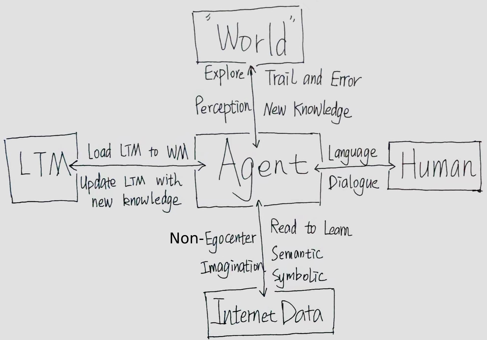

Brief Bio
When I watched the famous movie "The Matrix" for the first time, I was deeply attracted by the artificial intelligence described in the film.
After that, I made up my mind that I would create such "creatures" one day.
In my college days (2015-2019), I spent much time learning everything about computer science crazily.
As an attempt, I conducted my favorite project, a life-long learning framework, "SMART."
I also earned the opportunity to go to Microsoft Research Asia (MSRA) in 2018 to learn cutting-edge technology about deep learning.
After I graduated, I joined Microsoft as an SDE in 2019 (Bill Gates is a legend in our time).
Although I did a great job in the company and earned myself a comfortable life,
I can't stop asking myself whether this is my dream.
On my badge, it writes, "Empower every person and every organization on the planet to achieve more."
Thus, I left Microsoft and gave up a high salary and comfortable life for my dream. I joined the Institute of Neuroscience to study how our brain works in 2020.
In the institute, I considered a lot about what intelligence is and how to build artificial general intelligence from the neuroscience perspective.
Now I am here, I am ready to turn my dream into reality.
Research Proposal
My long-term research goal is to build an agent that can learn, create, and communicate like human beings. By integrating perception, action, and language under a unified framework, embodied agents can lead us toward this ultimate goal of computer science. With an interdisciplinary background in computer science and neuroscience, I can make a unique contribution to this area.
Here is a brief ascending hierarchical description:
1. Transformers - An Agent That Is Suitable for Any “Body”
2. The Blind Men and the Elephant - Perception & Multimodality
3. Crystallized Intelligence - Long-term Memory
4. The Imitation Game
5. Mary in the Room - Embodied Experience
6. Language, Neuro-symbolic, and Time Travel
7. What’s the Meaning of the Agent’s Life - Target Function
8. Where Is the Boundary – Inherent Bias and Knowledge Acquisition
9. An Agent Without Soul - Beyond Intelligence
[Full Text]
Research & Industry Experience
By Area (Click to Jump)
- Transfer Learning, Life-long Learning, and Network Architecture Search (NAS)
- Industrial-level Lightweight CNN for Semantic Segmentation and 3D Reconstruction
- Machine Learning in Large Scale Dynamic Data Analysis and Monitoring
- Network Security and Penetration Testing
In Chronological Order
| Sept. 2020 – Present | Master Student in Institute of Neuroscience (ION), University of Chinese Academy of Sciences (UCAS) |
My advisor is Prof. Zhe Zhang.
- [On-going] Biological plausible spike neural network (SSN) model of the hippocampus (HPC) to investigate memory consolidation during NonREM sleep.
- [On-going] Rethink the life-long learning framework framework "SMART" from the aspect of neuroscience.
(Contributions: Proposing these two research topics independently and writing all the code.)
- Spike sorting. Two-photon imaging, EEG, ECG, and brain connectomics analysis.
| July 2019 – Aug. 2020 | Software Development Engineer (SDE) in Microsoft, China |
- Microsoft patent "RISK ASSESSMENT OF FIREWALL RULES IN A DATACENTER." [Method]
I invented and implemented a novel method for firewall rules monitoring. I proposed two basic assumptions which can be extended into other scenarios with massive data. Based on these assumptions, this method overcame the difficulty of monitoring million-level firewall rules in large-scale datacenters.
(Contributions: Designing the patent independently and implementing most parts of the model.)
- Machine learning expert in the team.
I provided critical consultations for projects including "User Profile" and "Lateral Movement Detection."
| July 2018 – June 2019 | Research Intern in Media Computing Group, Microsoft Research Asia (MSRA) |
My mentor was senior researcher Jinglu Wang.
We co-operated with Teams and Skype teams in Redmond. Our model is currently running on Teams and Skype.
- Accelerating depth estimation and 3D reconstruction from the monocular image. [Details]
- Network pruning and compression for semantic segmentation. [Details]
(Contributions: All projects were finished by myself under the guidance of my mentor.)
| Sept. 2017 – June 2018 | Research Assistant in Artificial Intelligence and Robotics Institute, Xian Jiaotong University |
My advisor was Prof. Pengju Ren.
I finished my favorite work here. It is a framework of life-long learning. It is my dream to achieve a real AGI. Here we created a prototype. Unfortunately, this paper was not published.
- SMART: Self-organized Multitask Accelerate Resilient Learning. [Manuscript]
(Contributions: designing the model, writing almost all the code, running part of the experiments)
| Dec. 2016 – Sept. 2017 | Co-founder of 0w1 Network Security Club |
I established this club with my CTF (Capture the Flag) teammate Hongbo Chen.
- Machine learning-based eavesdropping of mobile phone digital keypad.
(Contributions: CNN part)
- Hold several CTF contests within the campus.
(Contributions: building CTF server with Docker, designing exams for web penetration testing, training newbies)
| Dec. 2015 – June 2016 | Software Development Intern in Ministry of Education Key Lab For Intelligent Networks and Network Security |
My advisor was Prof. Chenxu Wang.
It was my first time programming with C++. I wrote a music game to display the power law distribution of notes. This game was sold to China Digital Science and Technology Museum for exhibition. [Video in Chinese]
(Contributions: 98% code, around 10,000 lines of C/C++)
Education Experience
| Sept. 2020 - Present | Research master in Computational Biology, Institute of Neuroscience (ION), University of Chinese Academy of Sciences (UCAS) |
| Sept. 2015 – June 2019 | Bachelor’s degree in Computer Science and Technology, Xi’an Jiaotong University (XJTU) |
Publications
Aimaier, G., Qian, K., Zheng, Z., Peng, W., Zhang, Z., Ding, J. and Wang, X. (2022). Interictal Heart Rate Variability as a Biomarker for Comorbid Depressive Disorders among People with Epilepsy. Brain sciences, 12(5), 671. https://doi.org/10.3390/brainsci12050671.
Z. Zheng, Y. Wei, Z. Zhao, X. Wu, Z. Li and P. Ren, "Multitask Learning With Enhanced Modules," 2018 IEEE 23rd International Conference on Digital Signal Processing (DSP), 2018, pp. 1-5, doi: 10.1109/ICDSP.2018.8631696.
Y. Wei, Z. Zhao, Y. Tao, Z. Zheng, Z. Hao and P. Ren, "Activations Quantization for Compact Neural Networks," 2018 IEEE 23rd International Conference on Digital Signal Processing (DSP), 2018, pp. 1-5, doi: 10.1109/ICDSP.2018.8631650.
Honors & Awards
| Dec. 2017 | Second Place in Microsoft Hackathon, Xi’an Site |
| Dec. 2017 | Scholarship of Shidi Lu (2%) |
| Sept. 2017 | Third Prize in Triathlon of Network Security Contest, China-Final |
| April 2017 | Champion of Triathlon of Network Security - Enterprise competition, Northwest Division, China |
| March 2017 | First Prize in Chinese Colleges Computer Competition (CCCC) - Group Programming Ladder Tournament |
| Dec. 2016 | First Prize in The Mathematical Contest in Modeling, Shaanxi Province |
| May. 2016 | Silver Medal in ACM-ICPC China Shaanxi Provincial Programming Contest |